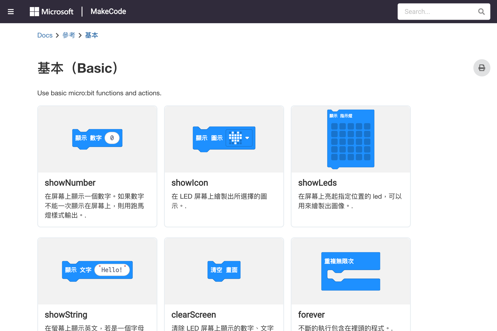

擴充套件的安裝與使用、NeoPixel LED、Servo、藍牙等常用套件
擴充套件（Extension）為 MakeCode 增加新的積木功能。除了內建的積木分類，你可以安裝第三方擴充來控制更多硬體設備或使用進階功能。
| 套件類型 | 功能 | 適用場景 |
|---|---|---|
| LED 燈帶 | 控制 NeoPixel / WS2812 燈條 | 炫彩燈光專案 |
| 伺服馬達 | 控制舵機角度 | 機器人、自動門 |
| 感測器 | 超音波、紅外線等 | 避障小車、距離偵測 |
| 無線通訊 | 藍牙、Radio | 遙控器、多機通訊 |
| 顯示器 | OLED、LCD | 顯示更多資訊 |

擴充套件
neopixel）NeoPixel 是最流行的可程式控制 RGB LED：
| 積木 | 說明 | 使用方式 |
|---|---|---|
neopixel.create() | 建立燈帶物件 | 指定腳位和 LED 數量 |
show color | 顯示指定顏色 | 所有 LED 同色 |
show rainbow | 顯示彩虹效果 | 自動漸變 |
set pixel color | 設定單顆 LED | 指定編號和顏色 |
show | 更新燈帶顯示 | 實際亮燈 |
// NeoPixel 燈帶控制
let strip = neopixel.create(DigitalPin.P0, 12, NeoPixelMode.RGB)
// 全部亮紅色
strip.showColor(neopixel.colors(NeoPixelColors.Red))
basic.pause(1000)
// 彩虹效果
strip.showRainbow(1, 360)
basic.pause(1000)
// 逐顆亮燈
for (let i = 0; i < 12; i++) {
strip.setPixelColor(i, neopixel.colors(NeoPixelColors.Blue))
strip.show()
basic.pause(100)
}伺服馬達可以精確控制旋轉角度，常用於機器人關節：
| 積木 | 說明 | 範圍 |
|---|---|---|
servo write pin | 設定角度 | 0~180 度 |
servo set pulse | 設定脈波寬度 | 500~2500 μs |
// 掃描式伺服馬達
let angle = 0
let direction = 1
basic.forever(function () {
pins.servoWritePin(AnalogPin.P1, angle)
angle += 5 * direction
if (angle >= 180 || angle <= 0) {
direction *= -1
}
basic.pause(100)
})多個 Micro:bit 之間可以使用 Radio 進行通訊：
// 發送端
radio.setGroup(1)
input.onButtonPressed(Button.A, function () {
radio.sendString("Hello!")
})
// 接收端
radio.onReceivedString(function (receivedString) {
basic.showString(receivedString)
})